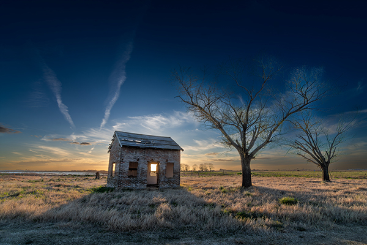
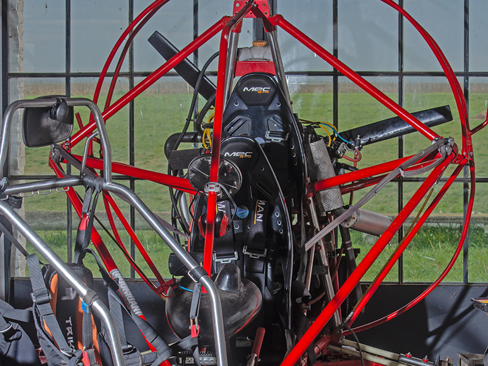
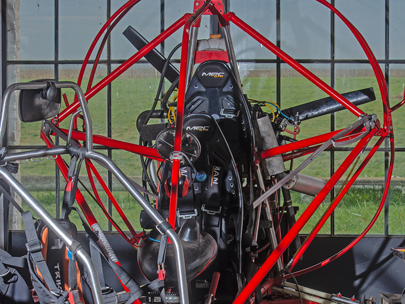

📸 Fotografía Laguna de Junín
Alta calidad: veleros, ciclismo, natación, eventos deportivos. Haroldo Horta desde tierra, agua o aéreo en 8K.
Consultar Cobertura✈️ Vuelos Paramotor Temporada 2026
 

Despega con Haroldo desde la laguna. Paseos, fotografía aérea, video hasta 8K. ¡Imposible quedar indiferente!
Reservar Vuelo YA🎓 Cursos / Talleres Personalizados

Composición profesional, luz amanecer/atardecer, teleobjetivos, cámaras de acción. Práctica en terreno real.
Inscribirme🌅 Galería Aérea Premium